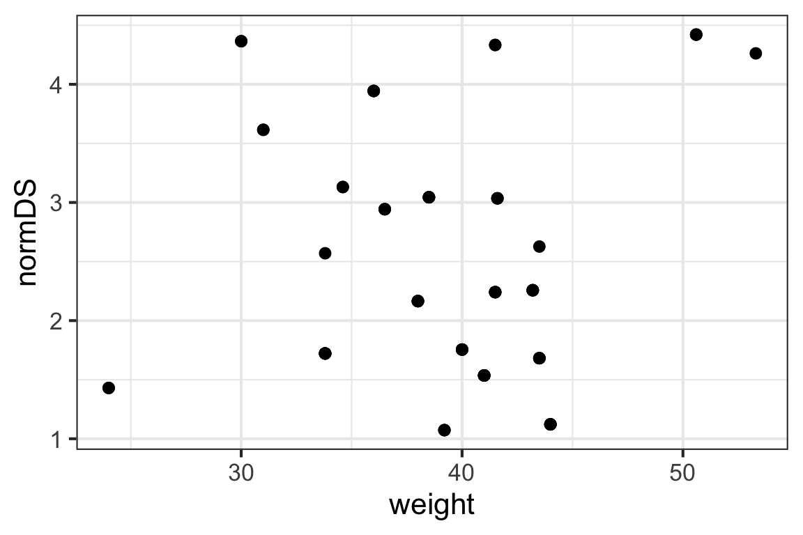

23 Interpretation and Inference for Regression Models
23.1 Section Learning Outcomes
Knowing how to plan and fit a model isn’t the end of the process (at all). What’s next? This section we’ve explored how to assess whether a model really is appropriate for a particular dataset, and thus reliable.
Remember that if a model doesn’t pass assessment - if any of the conditions go unmet - then the model can’t be trusted to provide reliable results at all.
But if a model does pass assessment, we can finally turn to model interpretation - what do the results mean, and how can we communicate the insights the model provides via words and visualizations?
Also part of this topic is something commonly called model selection. That term is a bit confusing given the approach taught in our course, as we won’t actually select certain variables to include/exclude from a model at this stage.
Rather, we are deciding whether and in what way each candidate predictor relates to the response variable. So for us, “model selection” is all about interpreting and understanding the model results, including using inferential statistics.
By the end of the section you will:
- Create and interpret prediction plots for multiple linear regression models
- Interpret confidence intervals for linear regression coefficients and in prediction plots
- Articulate how different modeling goals (prediction vs inference) influence how an analyst engages in the modeling process
- Interpret p-values or information criteria to do model selection for linear regression models
23.2 Text Reference
Recommended reading for the materials covered in this section can be found in:
- Beyond Multiple Linear Regression Chapter 1.6
- Regression Modeling Strategies Chapters 2.3, 4, and 5.1
- Course Notes Chapter 1.8-1.11 and Chapter 3
23.3 Prediction Plots
Once we have fitted a regression model and it passes assessment checks, how can we use it to draw conclusions?
One of the most useful tools we can have is a picture of what the model tells us about the relationships between our response and predictor(s).
Note: in the video, it’ll suggest you use the function ggpredict() (which still works) but it’s been superseded - now the preferred function to use is predict_response(). It has the same inputs.
How can we get one?
23.4 Prediction vs Inference
In this course we will focus on modeling for statistical inference, rather than for the purpose of making predictions for new scenarios based on our fitted model. Why? And why does the distinction matter? Before we dive into how to do inference, let’s discuss.
23.5 Inference, TL;DR
Ooh, Slow down…
Much of the rest of this section fills in a lot of details that were skimmed over in the very brief overview in that video. Focus first on understanding and applying what was in that video - the rest is elaboration.
23.6 Inference
Our goal: establish a method to generate confidence intervals and carry out tests for linear models, especially \(\beta_0\) and \(\beta_i\), the intercept and slope(s). In fact, we focus almost entirely on the slopes, but the exact same methods work for the intercept too (it’s just that the slope is almost always of much more practical interest than the intercept).
We want to be able to test:
\[H_0: \beta_1 = 0\]
\[H_A: \beta_1 \neq 0\]
If the null hypothesis above is true, that means there is no linear association between the predictor and response variables – informally, it means the predictor is useless at predicting the response.
If we reject the null, that suggests there is a real association between the two variables (and the predictor is “worthwhile” statistically to help predict the response).
Before we carry out any tests, let’s establish an example model.
Example
We will use the bonobos dataset as an example. You may recall the dataset from earlier examples. Briefly, the dataset is from a 2019 paper by J.S. Martin and colleagues on bonobo face measurements. The authors worked with 117 bonobos in European zoos and recorded data including their Sex, Age in years, weight, and some measurements about their face:

Finally, they also measured each bonobo’s assertiveness score (AssR) and dominance score (normDS).
The dataset is at https://sldr.netlify.app/data/bonobo_faces.csv and so you could read the dataset in to R by running:
bonobos <- readr::read_csv('http://sldr.netlify.app/data/bonobo_faces.csv')Practice
We might wonder whether size (as measured by weight) is a good predictor of the dominance score, normDS. Graphically:
gf_point(normDS ~ weight, data = bonobos)
Fit the corresponding regression model in R and view its summary(). Note, the dataset bonobos is already read in for you here:
Fill in the blanks with the right formula, dataset name, and fitted model object name!
bonobo_lm <- lm(normDS ~ weight, data = bonobos)
summary(bonobo_lm)SE of Sampling Distributions
As you may have noticed, the summary() of an lm() (or glmmTMB()) regression model fit includes not only estimates of the parameters \(\beta_0\) and \(\beta_1\), but also the standard errors of the corresponding sampling distributions! (Hooray.) These measure the standard deviation we’d expect to see in our parameter estimates from sample to sample, if we were somehow able to collect data many many times. They can be used to calibrate our uncertainty in our estimates of the \(\beta\)s, and they are found in the coefficient table, labelled "Std. Error".
normDS_model <- lm(normDS ~ weight, data = bonobos)
summary(normDS_model)
Call:
lm(formula = normDS ~ weight, data = bonobos)
Residuals:
Min 1Q Median 3Q Max
-1.3794 -0.8138 -0.2354 0.6043 2.0207
Coefficients:
Estimate Std. Error t value Pr(>|t|)
(Intercept) 2.00774 0.92555 2.169 0.0337 *
weight 0.01122 0.02334 0.481 0.6322
---
Signif. codes: 0 '***' 0.001 '**' 0.01 '*' 0.05 '.' 0.1 ' ' 1
Residual standard error: 1.031 on 66 degrees of freedom
Multiple R-squared: 0.003491, Adjusted R-squared: -0.01161
F-statistic: 0.2312 on 1 and 66 DF, p-value: 0.6322CI for the slope
Although we won’t derive the reasons why in detail, the sampling distribution for the slope has a t distribution with \(n - 2\) degrees of freedom (where \(n\) is the number of rows in the dataset).
So, after all that, we could find a CI for a regression slope according to:
\[ \hat{\beta}_1 \pm t_*SE(\hat{\beta}_1)\] Where \(t_*\) is a critical value from a \(t(n-2)\) distribution, and SE(\(\hat{\beta}_1\)) is the standard error of the slope from the coefficient table in the model summary().
As an example, find a 95% CI for the slope of our bonobo regression model.
We can do this somewhat manually:
bm <- lm(normDS ~ weight, data= bonobos)
summary(bm)
Call:
lm(formula = normDS ~ weight, data = bonobos)
Residuals:
Min 1Q Median 3Q Max
-1.3794 -0.8138 -0.2354 0.6043 2.0207
Coefficients:
Estimate Std. Error t value Pr(>|t|)
(Intercept) 2.00774 0.92555 2.169 0.0337 *
weight 0.01122 0.02334 0.481 0.6322
---
Signif. codes: 0 '***' 0.001 '**' 0.01 '*' 0.05 '.' 0.1 ' ' 1
Residual standard error: 1.031 on 66 degrees of freedom
Multiple R-squared: 0.003491, Adjusted R-squared: -0.01161
F-statistic: 0.2312 on 1 and 66 DF, p-value: 0.6322CI95 <- -0.14278 + c(-1,1) *
qt(0.975, df = nrow(bonobos) - 2) * 0.06668
CI95[1] -0.275910915 -0.009649085Or… we will generally take advantage of the fact that there’s a function for that:
Notice the shortcut – the R function confint() returns CIs (with a default confidence level of 95%).
We can also omit specifying which predictor(s) we want CIs for and confint() will return them all…
Test for a slope
We can also test the null hypothesis \(H_0: \beta_1 = \beta_{1\text{null}}\) (where \(\beta_{1\text{null}}\) is some hypothetical slope value of interest) using the standardized test statistic
\[ t = \frac{\hat{\beta}_1 - \beta_{1\text{null}}}{SE(\hat{\beta}_1)}\]
The most common value for \(\beta_{1\text{null}}\) is \(0\), because if \(\beta_1 = 0\) that means that there is no relationship between the predictor and response and the predictor is useless as a predictor. If we can reject that null hypothesis, we can conclude that the predictor does have some utility.
To practice, you could carry out a two-sided test of \(H_0: \beta_1 = 0\) for the bonobo regression as shown in the hints below (if you learned R in your intro stat course and remember your intro stat pretty well).
normDS_model <- lm(normDS ~ weight, data= bonobos)
summary(normDS_model)
t_stat <- (-0.14278 - 0) / (0.06668)
p_val <- 2 * pt(t_stat, df = nrow(bonobos) - 2, lower.tail = TRUE)
p_valORRRR…A shortcut (which you can take!): Notice that this p-value is already in the model summary (in the last column of the coefficient table, labelled “Pr(\(>\vert\)t\(\vert\))“).
#shortcut: just use model summary
normDS_model <- lm(normDS ~ weight, data= bonobos)
summary(normDS_model)
Call:
lm(formula = normDS ~ weight, data = bonobos)
Residuals:
Min 1Q Median 3Q Max
-1.3794 -0.8138 -0.2354 0.6043 2.0207
Coefficients:
Estimate Std. Error t value Pr(>|t|)
(Intercept) 2.00774 0.92555 2.169 0.0337 *
weight 0.01122 0.02334 0.481 0.6322
---
Signif. codes: 0 '***' 0.001 '**' 0.01 '*' 0.05 '.' 0.1 ' ' 1
Residual standard error: 1.031 on 66 degrees of freedom
Multiple R-squared: 0.003491, Adjusted R-squared: -0.01161
F-statistic: 0.2312 on 1 and 66 DF, p-value: 0.6322What does it all mean? The p-value of this test measures the strength of evidence in our data against the null hypothesis of no association. Smaller p-values can be considered stronger evidence (and ones bigger than ~0.05-0.1 give weak to no evidence against the null).
Here, the p-values is really, really big (about 0.6), so we have no evidence against the null hypothesis of no association between a bonobo’s weight and normDS score.
But that doesn’t mean we can’t conclude anything!
Concluding “we have no evidence, based on this data, of any association between weight and dominance score” is an answer to the question of whether they are associated. The answer just seems to be…no.
23.7 What’s next?
Well, we have explored some ways of using linear regression model results to make inferences about whether or not a quantitative predictor is associated with a response variable. The ones we’ve seen have, hopefully, helped you to understand the models a bit better, too!
But we don’t have enough tools in our tool-box yet.
Consider, for example: what if you have a categorical predictor with multiple possible values? We don’t yet have a tool that lets us address whether such a predictor is associated with the response, nor to compare multiple candidate models.
Continue forward to learn approaches that can take us further!